Las capturas de esta guía usan casos y nombres inventados.
Es un ayudante que funciona en tu ordenador:
Ten a mano:
| ☐ | La clave de la inteligencia artificial. Es un texto largo que empieza por sk-ant-.
Te la pasamos por WhatsApp o por correo: solo hay que copiarla y pegarla. |
| ☐ | Tu correo de Outlook y su contraseña de siempre. No tienes que crear ninguna contraseña nueva. |
| ☐ | Unos 15 minutos con el ordenador y conexión a internet. |
Consejo: clic derecho sobre él → Mostrar más opciones → Enviar a → Escritorio (crear acceso directo). Así lo tienes en el escritorio.
La pantalla de bienvenida tiene 4 pasos. Solo se hace una vez.
Escribe tu nombre tal como sale en las notificaciones, en mayúsculas. Así el programa sabe a qué parte representas.
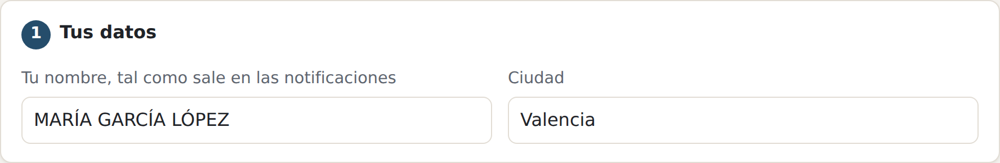
Pega la clave que te pasamos y pulsa Comprobar clave. Debe salir en verde ✓ La clave funciona.
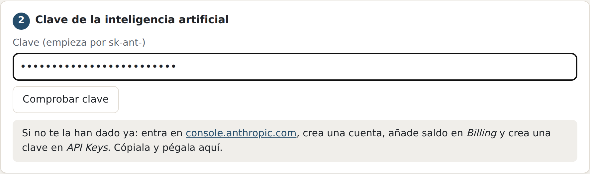
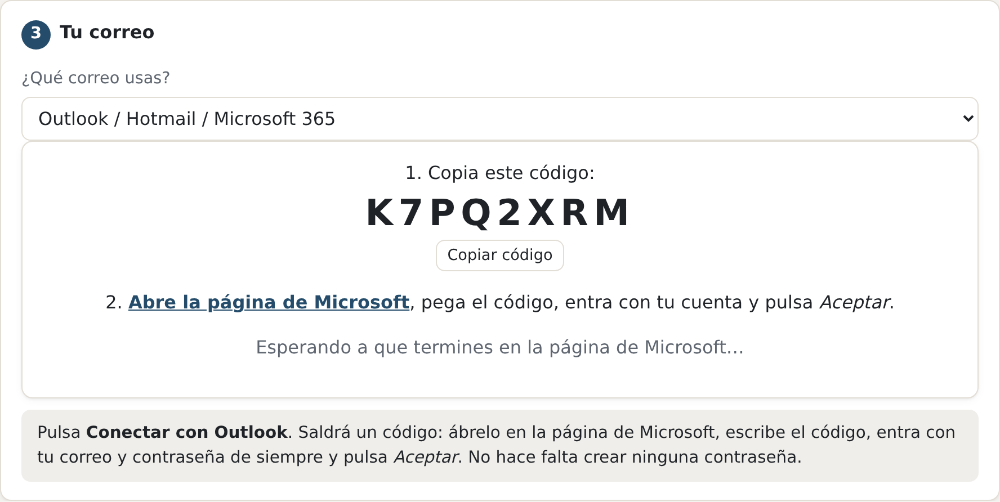
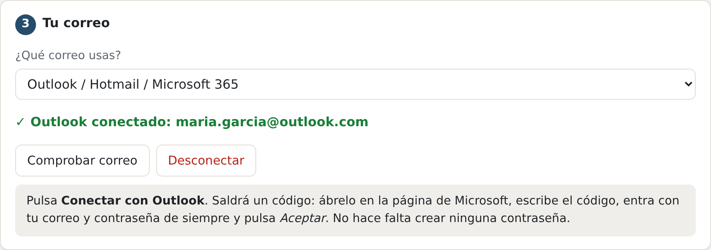
Deja marcada la casilla «Abrir el asistente al encender el ordenador»: así revisa el correo aunque no te acuerdes de abrirlo. Pulsa Empezar a usarlo.
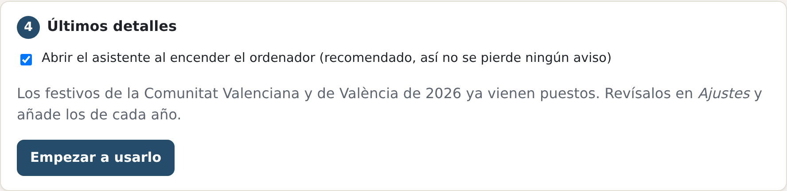
Si el navegador pregunta si el programa puede mostrar notificaciones, pulsa Permitir: así te avisa cuando llega algo nuevo.
A la izquierda está el menú. Lo más útil:
Los plazos que vencen esta semana y las novedades sin revisar. Cuando hayas hecho algo, marca la casilla del plazo.
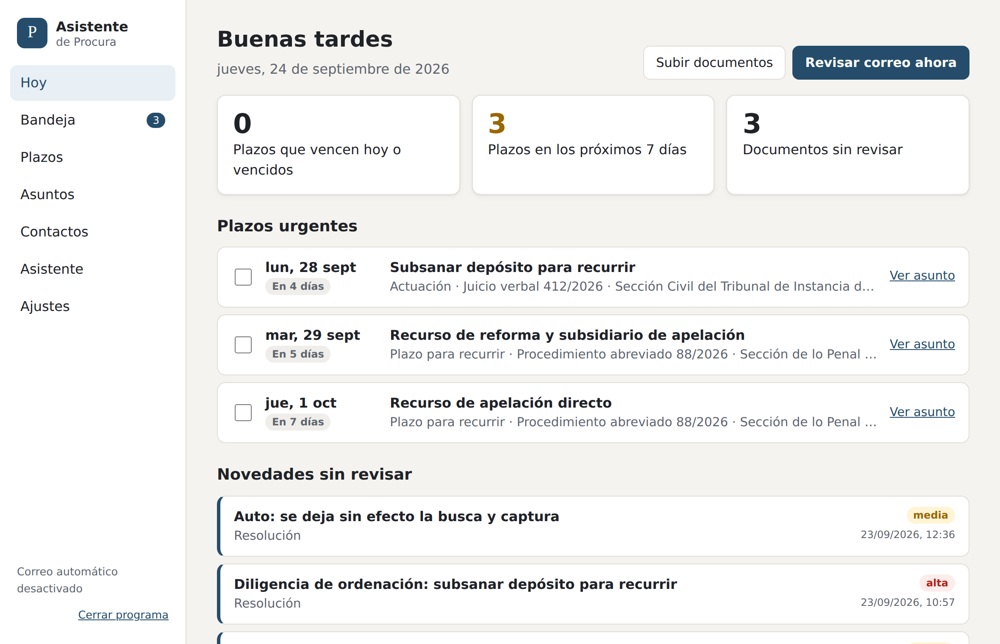
También puedes arrastrar aquí los PDF que descargues de LexNET: el programa los lee igual que los correos y saca la fecha de recepción del nombre del archivo.
Al pinchar en una novedad ves qué dice, qué hay que hacer, los plazos que ha apuntado y los datos del procedimiento. Con los botones de arriba puedes pedir que te redacte el escrito o el correo al abogado.
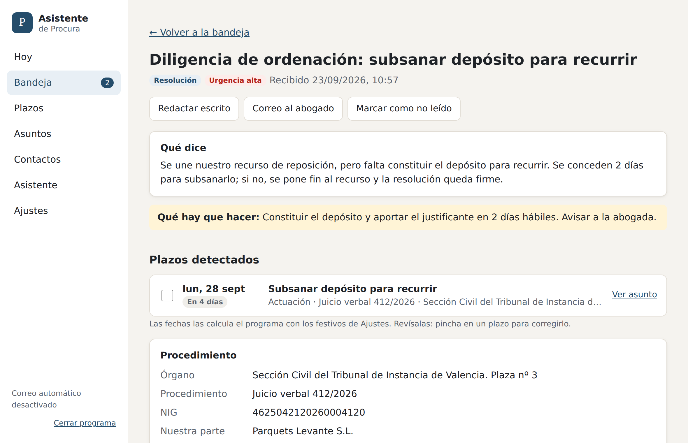
Todos los plazos ordenados: vencidos, hoy, próximos 7 días y más adelante. Pincha en un plazo para corregirlo (días, fecha de recepción…) y la fecha se recalcula sola. Con Exportar a calendario los puedes pasar a Outlook.
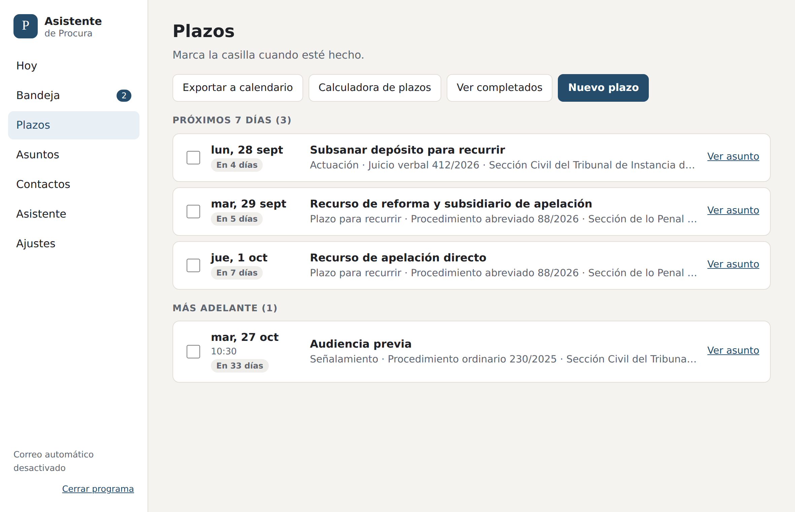
Con la Calculadora de plazos puedes calcular cualquier plazo a mano:
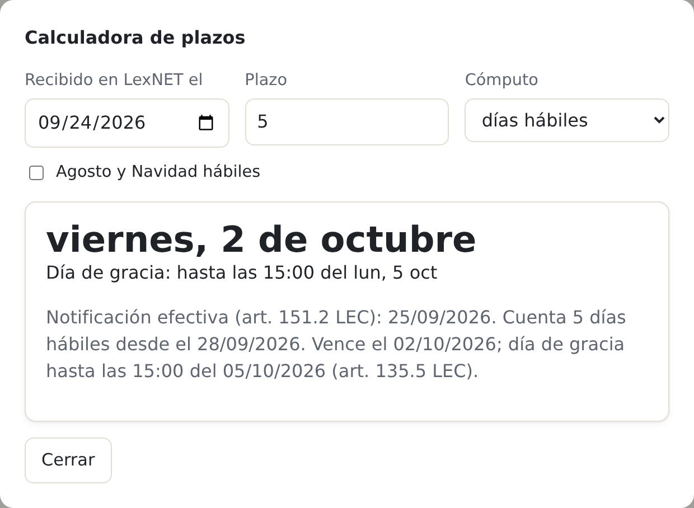
Elige el asunto (así lee sus notificaciones) y escribe lo que necesitas como se lo dirías a una persona, o usa los botones de atajo. Debajo de cada respuesta hay botones para Copiar, Descargar Word y, en los correos, Abrir en el correo.
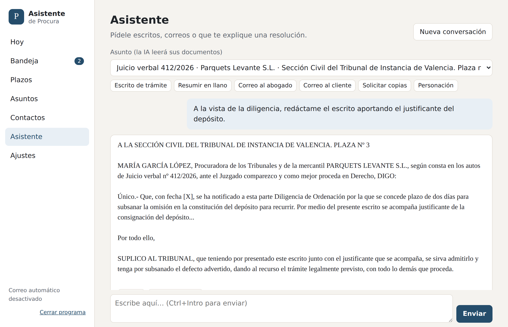
Ejemplos de peticiones:
Se rellenan solos al llegar notificaciones. En cada asunto ves todo su historial y sus plazos, y puedes añadir notas o cambiar el abogado. En «Contactos» tienes los correos y teléfonos de los abogados.
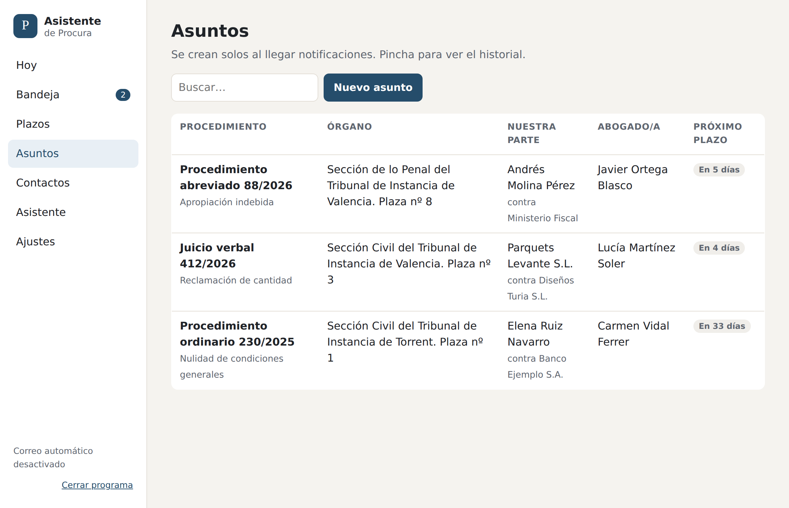
Para comprobar que todo va bien, haz estas pruebas y apunta lo que no cuadre:
| ☐ | Llega una notificación a tu correo y aparece en «Hoy» en unos minutos, con un resumen que tenga sentido. |
| ☐ | Compara 3 o 4 plazos con cómo los calculas tú. Si alguno no coincide, anota cuál y por qué. |
| ☐ | Arrastra un PDF de LexNET a la pantalla «Hoy» y mira que lo lee bien. |
| ☐ | Pide un escrito sencillo en «Asistente» y revisa si tiene tu formato y tu forma de redactar. |
| ☐ | Pide un correo para un abogado y pulsa «Abrir en el correo». |
| ☐ | Revisa los festivos en «Ajustes» (vienen los de la Comunitat Valenciana y València de 2026). Si trabajas con juzgados de otros pueblos, añade sus fiestas locales. |
| ☐ | Apaga y enciende el ordenador y comprueba que el programa sigue funcionando. |
Cuéntanos lo que no te guste o eches en falta: se puede mejorar y la nueva versión te avisará sola.
Cuando haya mejoras saldrá un aviso azul arriba con un enlace. Descarga el archivo nuevo, pulsa «Cerrar programa» y sustituye el AsistenteProcura de Documentos por el nuevo. No se pierde nada.
Todo se guarda solo en tu ordenador, en la carpeta Documentos → Asistente de Procura. Copia esa carpeta de vez en cuando a un pendrive o a OneDrive.
Para leer las notificaciones y redactar, el texto se envía a la inteligencia artificial (Claude, de la empresa Anthropic). Según sus condiciones, no lo usa para entrenar sus sistemas. Aun así, tenlo en cuenta por el secreto profesional.
La inteligencia artificial se paga por uso: unos céntimos por cada notificación leída o escrito redactado. El saldo lo controlamos nosotros.
| Qué pasa | Qué hacer |
|---|---|
| No se abre al hacer doble clic | Espera 15 segundos (la primera vez tarda). Si sigue sin abrirse, abre el navegador y
escribe 127.0.0.1:8765 en la barra de direcciones. |
| «Windows protegió su PC» | Más información → Ejecutar de todas formas. |
| El antivirus lo bloquea | Avísanos: hay que añadirlo como programa de confianza. |
| Abajo a la izquierda pone «Error de correo» | Ve a Ajustes → Correo, pulsa Desconectar y otra vez Conectar con Outlook. |
| Al conectar Outlook: «Hay que pedir permiso al administrador» | Tu correo lo gestiona el Colegio o el despacho. Avísanos y lo vemos. |
| Al comprobar el correo: «AUTHENTICATE failed» | En Outlook (web): Configuración → Correo → Reenvío e IMAP → activar Permitir que los dispositivos y las aplicaciones usen IMAP. |
| Un documento pone «Error» o «Leyendo…» mucho rato | Entra en él y pulsa Volver a analizar con la IA. Si pone algo de la clave o del saldo, avísanos. |
| Un plazo está mal | Pincha en él y corrígelo. Si falta algún festivo, añádelo en Ajustes. Y cuéntanoslo. |
| La IA ha entendido mal una notificación | Entra en ella y pulsa Volver a analizar con la IA, o corrige a mano. |